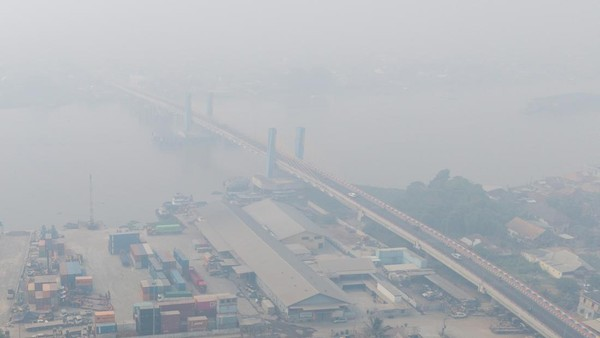
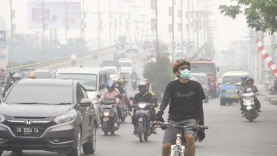
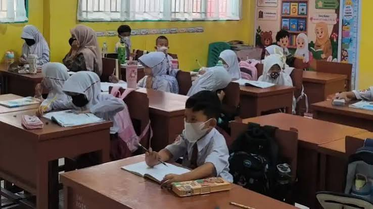

Karhutla
Karhutla
Kebakaran Hutan Menjadi Penyebab Kabut Asap
Kebakaran hutan dan lahan menghasilkan asap yang dapat mengganggu aktivitas masyarakat serta kualitas udara.
Baca SelengkapnyaKabar Kabut Asap menyajikan informasi tentang kebakaran hutan dan lahan, kualitas udara, kesehatan, dan dampaknya bagi kegiatan sekolah, lengkap dengan langkah sederhana untuk melindungi diri.
Informasi tentang penyebab, dampak, dan cara menghadapi kabut asap.
Karhutla
Kebakaran hutan dan lahan menghasilkan asap yang dapat mengganggu aktivitas masyarakat serta kualitas udara.
Baca Selengkapnya
LingkunganAsap yang menyebar di udara dapat mengurangi jarak pandang dan membuat lingkungan menjadi kurang sehat.
Baca Selengkapnya
KesehatanPaparan kabut asap dapat menyebabkan batuk, iritasi mata, dan gangguan pernapasan. Masyarakat perlu mengurangi paparan asap.
Baca Selengkapnya
PendidikanKualitas udara yang buruk dapat mengganggu kegiatan belajar, terutama aktivitas siswa di luar ruangan.
Baca Selengkapnya